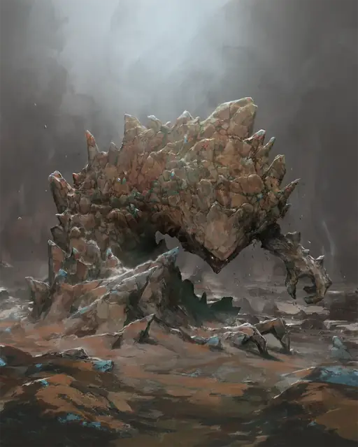

Земляной элементаль
Earth Elemental
Большой Элементаль, Нейтральный

Класс Защиты 17 Инициатива −1 (9)
Хиты 147 (14к10 + 70)
Скорость 30 футов, Копания 30 футов
| мод | спас | ||
|---|---|---|---|
| СИЛ | 20 | +5 | +5 |
| ЛОВ | 8 | −1 | −1 |
| ТЕЛ | 20 | +5 | +5 |
| мод | спас | ||
|---|---|---|---|
| ИНТ | 5 | −3 | −3 |
| МДР | 10 | +0 | +0 |
| ХАР | 5 | −3 | −3 |
Уязвимость к урону Звук
Иммунитеты Яд; Бессознательный, Истощение, Окаменевший, Отравленный, Парализованный
Чувства пассивное Восприятие 10, Чувство вибрации 60 футов
Языки Первичный (Терран)
Опасность 5 (1 800 опыта; БВ +3)
Особенности
Скольжение сквозь твердь. Элементаль может перемещаться сквозь немагические необработанные землю и камень. При этом элементаль не тревожит материю, через которую перемещается, и не оставляет на нём следов.
Осадное чудовище. Элементаль наносит двойной урон предметам и постройкам.
Действия
Мультиатака. Элементаль совершает две атаки Размашистым ударом или Броском булыжника в любой комбинации.
Размашистый удар. Бросок рукопашной атаки: +8, досягаемость 10 фт. Попадание: 14 (2к8 + 5) Дробящего урона.
Бросок булыжника. Бросок дальнобойной атаки: +8, дистанция 60 фт. Попадание: 8 (1к6 + 5) Дробящего урона. Если цель — существо Большого размера или меньше, она становится Опрокинутой.
Бонус мастерства +3
Среда обитания Горы, Подземье, Стихийный план Земли
Сокровища Отсутствуют
Земляной элементаль
Первозданный дух почвы и камня
Земляные элементали образуются, когда первобытные духи со Стихийного плана Земли сливаются с камнями и минералами. У этих существ мощные конечности и грубые черты, иногда усыпанные рудой, самоцветами, кристаллами, яркими бороздами или живыми растениями. На Материальном плане земляные элементали часто служат тем, кто их призвал, либо появляются в местах, подверженных влиянию их родного плана: у кристаллических узлов, энергетических разломов или залежей магической руды. Земляные элементали без труда проходят сквозь камень и могут обрушить целые строения своими могучими кулаками.
Обычно земляные элементали состоят не из одной лишь грязи. Хотя состав элементаля не меняет его характеристик и не имеет денежной ценности, он делает каждого элементаля особенным. Совершите бросок по таблице «Состав земляного элементаля» для вдохновения или определите сами его отличительные черты.
Состав земляного элементаля
| 1к8 | В теле земляного элементаля есть… |
| 1 | Красочные минеральные образования. |
| 2 | Оплавленные комья остывшей магмы. |
| 3 | Трава, мох или корни растений. |
| 4 | Груды торфа или компоста. |
| 5 | Бугры песка вперемешку с ракушками. |
| 6 | Щебень или куски разрушенного строения. |
| 7 | Яркие прожилки или цветные полосы. |
| 8 | Железные или другие рудные жилы. |